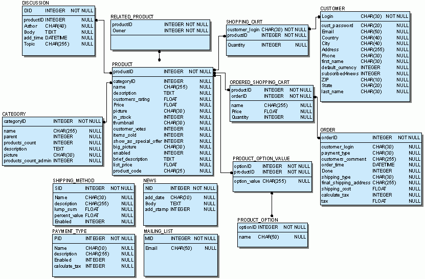

|
Предисловие
Установка на локальный сервер (на Ваш компьютер)
Установка на удаленный сервер
Настройки магазина
Шаблоны
Обработка кредитных карт
Структура базы данных
Предисловие
Просим Вас внимательно прочитать данное руководство по пользованию Shop-Script.
Если у Вас возникнут какие-либо вопросы, можете посмотреть ответы на них в Часто Задаваемых Вопросах.
В случае, если ответ не нашелся, обращайтесь в службу поддержки.
Скрипт Shop-Script 2.0 написан на PHP (необходима версия 4.0.4 и выше) и меожет работать с тремя различными СУБД: MySQL, MS SQL Server, Interbase.
Магазин, построенный на основе Shop-Script 2.0, состоит из 2-х частей: общедоступной (клиентская часть) и административной.
Первая - это сам магазин, доступ к которому имеет любой пользователь. Здесь производится регистрация, просмотр и заказ товаров регулярными пользователями.
Административная часть - раздел, в котором возможно добавлять новые категории,
товары, вести учет над магазином. К ней имеет доступ только один пользователь,
логин которого можно определить в файле настроек подключения к базе cfg/connect.inc.php или же в процессе установки магазина.
По сути это такой же пользователь, как и остальные - за тем исключением, что у него есть
доступ к администраторской части магазина.
Все остальное он может делать как и обычный покупатель (изменять данные, делать заказы и т.п.).
Все общение с покупателями делается от его имени и в качестве обратного адреса при общении по
электронной почте выступает именно его e-mail.
Его email (равно как и другие данные) можно изменить точно также, как это делает обычный пользователь
- щелкнув по ссылке "Изменить личные данные" в пользовательской части магазина в разделе "Мой счет".
Установка на локальный сервер (на Ваш компьютер)
Для работы скрипта у Вас должны быть установлены:
- HTTP-сервер
Например, Apache, IIS и другие.
Скачать Apache Вы можете на www.apache.org
Инструкции по его установке можно найти либо там же, либо в Интернете (таких ресурсов довольно много).
- PHP (>= 4.0.4)
скачать можно на www.php.net
в состав дистрибутива входят инструкции по установке
- SQL-СУБД
в пакет включены файлы для работы магазина с базами MySQL, InterBase, MS SQL.
Если указанные продукты у вас не установлены, вы можете воспользовать программой Denver (www.dklab.ru).
Она установит и настроит все необходимое для скрипта ПО (СУБД в этом случае будет - MySQL).
Установка скрипта:
- Создайте отдельную папку (или виртуальный сервер) под магазин
- Перепишите туда содержимое архива Shop-Script 2.0 (за исключением папки help)
- Пользователи ОС UNIX/Linux: необходимо сделать chmod 776 для корневой папки магазина, папок products_pictures, cfg, а также для файла install.php и всего содержимого папки cfg
- Создайте новую базу данных, которая будет использоваться под ваш магазин
- Запустите скрипт install.php
(для этого наберите в браузере http://<сервер и папка, куда вы установили Shop-Script>/install.php)
и заполните появившуюся форму (настройки подключения в базе данных)
- Установка завершена :)
Установка на удаленный сервер
- Скопируйте содержимое архива Shop-Script 2.0 (за исключением папки help) на Ваш удаленный сервер
- Пользователи ОС UNIX/Linux: необходимо сделать chmod 776 для корневой папки магазина, папок products_pictures, cfg, а также для файла install.php и всего содержимого папки cfg
- Создайте новую базу данных, которая будет использоваться под ваш магазин
- Запустите скрипт install.php
(для этого наберите в браузере http://<сервер и папка, куда вы установили Shop-Script>/install.php)
и заполните появившуюся форму (настройки подключения в базе данных)
- Установка завершена :)
* если у вас возникли какие-либо вопросы/проблемы с установкой или использованием вашего магазина, попробуйте найти ответ в здесь
Настройки
После установки скрипта автоматически регистрируется пользователь-администратор с логином и паролем, которые вы указали.
Изменить эти данные можно в пользовательской части вашего магазина в разделе "Мой счет" (вы должны войти под логином и паролем администратора, а затем зайти в этот раздел).
Для правильной работы магазина необходимо:
- в настройках PHP (php.ini) установлено
register_globals = On и magic_quotes_runtime = Off
- в вашем браузере включены cookies
Обязательно закрывайте доступ к папке cfg и includes, чтобы никто не смог узнать Ваши пароли подключения к базе.
Если Вы пользуетесь HTTP-сервером Apache, Вы можете сделать это с помощью .htaccess-файлов.
В папке cfg и includes уже лежит соответствующий файл, запрещающий доступ к ней всем посторонним пользователям.
Список языков интерфейса определяется в файле language_list.php. Для добавления/удаления языков следуйте инструкциям, данным в этом файле.
Шаблоны
Шаблон представляет собой html-файл, который обрабатывается скриптом (index.php). Он
определяет основной дизайн магазина.
Как Вы можете увидеть, в шаблоне есть специальные тэги в фигурных скобках {...}.
Именно они и заменяются скриптом.
Список этих тэгов:
- {REGISTER/HOME}
ссылка на форму регистрации или личный кабинет в зависимости от того,
был пользователь авторизован или нет
- {CURRENCY}
ссылка на страницу изменения валюты (показывается, если в магазине более одного типа валют)
- {AUTHORIZATION}
форма входа в магазин
- {SEARCH}
форма поиска
- {SHOPPING_CART}
краткая информация о содержимом корзины и ссылка на оформление заказа
- {CATEGORIES}
раскрывающийся список категорий
- {MAIN_CONTENT}
главная часть содержания
- {NEWS}
новости
- {VOTING}
голосование
- {LANGUAGE}
форма выбора языка
- {TITLE}
заголовок текущей страницы (<title></title>)
- {META}
автоматически генерирующиеся META-теги
В шаблоне не определяется, на что будет заменены эти тэги. Это делается в самом скрипте. Поэтому для изменения,
например, вида формы поиска или входа в магазин, Вам придется редактировать скрипт (index.php).
Если Вам нужно изменить цвета шрифтов, которыми пишется различная информация в скрипте, Вы можете
сделать это не редактируя скрипт, а изменив только таблицу стилей style.css, указав нужные цвета.
Обратите внимание на то, что файл с таблицей стилей должен лежать в той же директории, где лежит скрипт index.php,
а не в директории с шаблонами!
Обработка кредитных карт
В Shop-Script 2.0 реализована поддержка приема платежей через процессинговые центры AuthorizeNet (www.authorizenet.com) и 2CheckOut (www.2checkout.com).
О порядке подключения к этим системам читайте на указанных сайтах.
Для настройки приема платежей Вам необходимо в режиме администратора указать способ оплаты, который предполагает обработку платежа через одну из указанных систем, тип соединения (HTTP / HTTPS) и настройки вашего аккаунта в системе - ID, пароль и т.п.
При оформлении заказа пользователем, в случае, если он выбрал как способ оплаты кредитную карту, Shop-Script отправит запрос на обработку платежа серверу процессингового центра. Заказ будет записан в базу данных. Результат обработки платежа Вы сможете узнать от системы, к которой Вы подключены (authorize.net / 2checkout).
Структура базы данных

Copyright © www.shop-script.ru, 2002-3. All rights reserved.
|